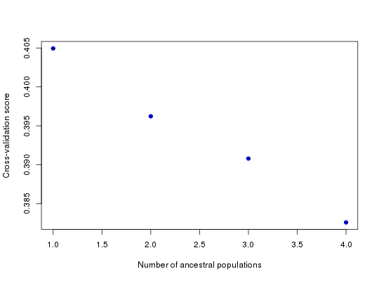
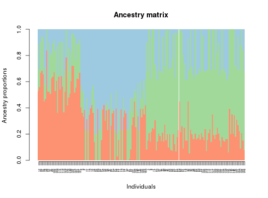
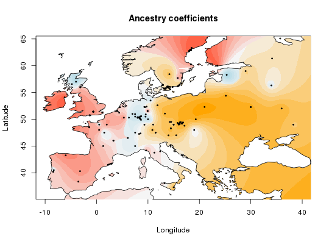
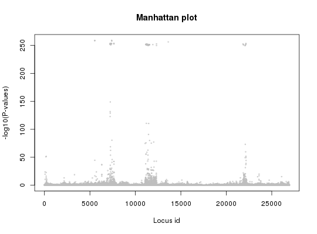

tess3 estimates spatial population structure using a graph based non
negative matrix factorization for several value of ancestry population number.
After estimating the population structure is used to
compute a Fst statistic for each locus. See references for more details.
tess3(X, XProba = NULL, coord, K, ploidy, lambda = 1, rep = 1, W = NULL, method = "projected.ls", max.iteration = 200, tolerance = 1e-05, openMP.core.num = 1, Q.init = NULL, mask = 0, algo.copy = TRUE, keep = "best", verbose = FALSE)
NULL, XProba
is used.NULL, it is computed from the genotype matrix X.
See reference for more details.K.W[i,j] = exp( - (coord[i] - coord[j])^2 / sigma^2).
Where coord[i] is
the geographic coordinate for the individual i and
sigma equals 5 percent of the average geographic distance between individuals."projected.ls" or "qp". If "projected.ls",
an aleternated projected least squares algorithm is used. If "qp",
an alternated quadratic programing algorithm is used. See references for more
detailsQ for the algorithm.NULL this the proportion of the data matrix which
is masked to compute the cross validation criteria."best", for each value of K only result with best rmse will be keep. If "all", for each value of K all results will be keep
and returned. This second option take more room in memory.TRUE more information are printed.An object of class tess3 which is a list of size length(K).
Each element of this list is a list with:
keep = "best", the tess3Main result
with the best rmse. If keep = "all", a list of tess3Main result
for each repetition.XProba and
tcrossprod(Q, G) for each repetition.XProba and
tcrossprod(Q, G) for each repetition.NULL.
The list of the root square mean error between XProba[masked] and
tcrossprod(Q, G)[masked] for each repetition.NULL. The list of
tcrossprod(Q, G)[masked] for each repetition.Methods available for this class:
https://hal.archives-ouvertes.fr/hal-01222555/ http://biorxiv.org/content/early/2016/10/12/080291
library(tess3r) # Arabidopsis thaliana data set data(data.at) genotype <- data.at$X coordinates <- data.at$coord # Run of tess3 algorithm tess3.obj <- tess3(X = genotype, coord = coordinates, K = 1:4, method = "projected.ls", ploidy = 1)#> Computing spectral decomposition of graph laplacian matrix: done #> Main loop with 1 threads: #> : done #> Computing spectral decomposition of graph laplacian matrix: done #> Main loop with 1 threads: #> : done #> Computing spectral decomposition of graph laplacian matrix: done #> Main loop with 1 threads: #> : done #> Computing spectral decomposition of graph laplacian matrix: done #> Main loop with 1 threads: #> : done #># Plot error plot(tess3.obj, pch = 19, col = "blue", xlab = "Number of ancestral populations", ylab = "Cross-validation score")# Retrieve tess3 Q matrix for K = 3 clusters q.matrix <- qmatrix(tess3.obj, K = 3) ## STRUCTURE-like barplot for the Q-matrix barplot(q.matrix, border = NA, space = 0, xlab = "Individuals", ylab = "Ancestry proportions", main = "Ancestry matrix") -> bp#> Use CreatePalette() to define color palettes. #>axis(1, at = 1:nrow(q.matrix), labels = bp$order, las = 3, cex.axis = .4)## Spatial interpolation of ancestry coefficient my.colors <- c("tomato", "orange", "lightblue") my.palette <- CreatePalette(my.colors, 9) plot(q.matrix, coordinates, method = "map.max", main = "Ancestry coefficients", xlab = "Longitude", ylab = "Latitude", resolution = c(500,500), cex = .4, col.palette = my.palette)This function required to attach maps namespace.# Retrieve tess3 results for K = 3 p.values <- pvalue(tess3.obj, K = 3) hist(p.values, col = "lightblue")## Manhatan plot plot(p.values, main = "Manhattan plot", xlab = "Locus id", ylab = "-log10(P-values)", cex = .3, col = "grey")